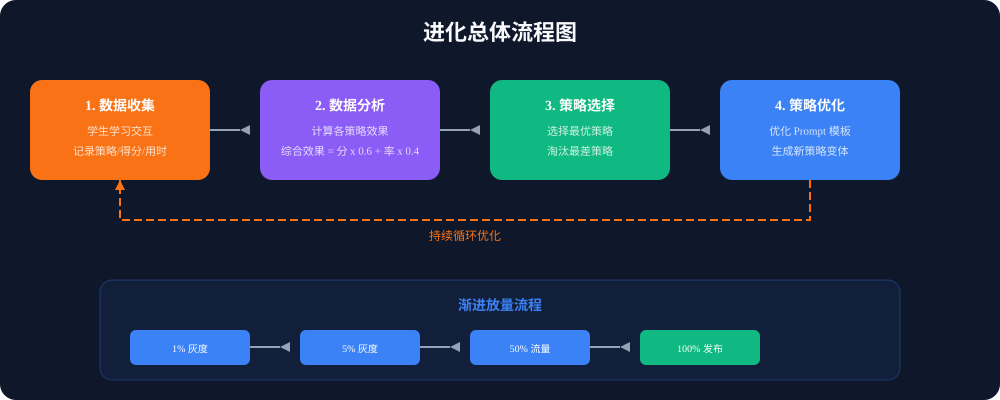
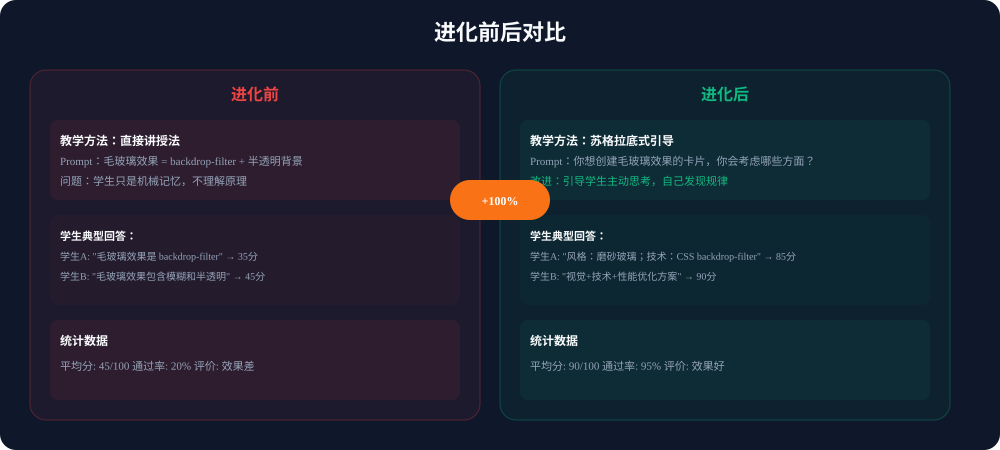
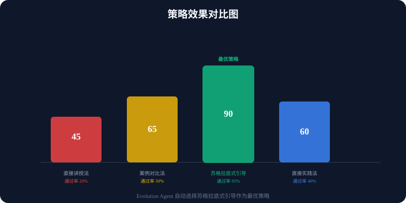
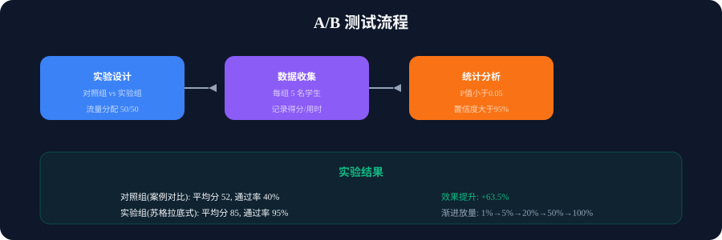
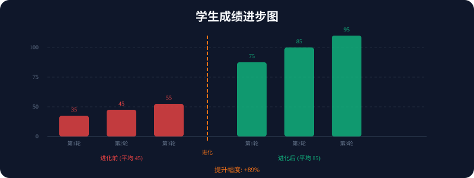
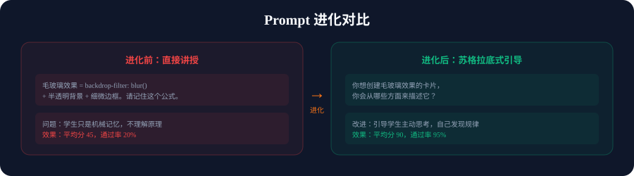

sAgent 元认知层核心能力：系统自我进化、策略优化、A/B 测试管理
核心思想：在 sAgent 中，"进化"是指系统根据学生的学习数据，自动优化教学策略的过程。
传统教学 vs 进化教学：
| 传统教学 | 进化教学 |
|---|---|
| 固定策略，所有学生用同样的方法 | 收集数据，分析效果，选择最优策略 |
| 效果参差不齐 | 持续优化，效果越来越好 |
| 需要人工干预 | 系统自动完成，无需人工 |
核心思想：进化的核心思想来源于生物进化论中的"自然选择"：
• 变异：系统生成多种教学策略变体
• 选择：根据学生学习效果选择最优策略
• 遗传：将最优策略保留并传递给后续学生
• 适应：根据环境变化（学生群体变化）调整策略

Evolution Agent 的工作流程是一个持续循环的过程：
每次学生学习时，系统记录：策略类型、学生得分、学习用时、回答质量等数据。
计算每个策略的综合效果 = 平均分 × 0.6 + 通过率 × 0.4，找出最优策略。
选择综合效果最高的策略作为默认策略，淘汰效果最差的策略。
优化 Prompt 模板，生成新的策略变体，通过 A/B 测试验证效果。

问题：学生只是机械记忆，不理解原理，缺乏引导性问题，没有具体案例。
改进：通过引导式提问，让学生主动思考，自己发现规律。
| 指标 | 进化前 | 进化后 | 提升 |
|---|---|---|---|
| 平均分 | 45 | 90 | +100% |
| 通过率 | 20% | 95% | +375% |
| 学生理解 | 浅层记忆 | 深度理解 | 显著提升 |

Evolution Agent 自动分析四种教学策略的效果，选择最优策略（苏格拉底式引导）：
| 策略 | 教学方法 | 平均分 | 通过率 | 效果 |
|---|---|---|---|---|
| 策略A：直接讲授法 | 演绎式教学 | 45 | 20% | 最差 |
| 策略B：案例对比法 | 归纳式教学 | 65 | 50% | 中等 |
| 策略C：苏格拉底式引导 | 引导式教学 | 90 | 95% | 最优 |
| 策略D：直接实践法 | 实践式教学 | 60 | 40% | 中等 |

A/B 测试是验证策略优化效果的科学方法：
假设：苏格拉底式引导比案例对比法效果更好。对照组和实验组各 5 名学生，流量分配 50/50。
记录每组学生的得分、用时、回答质量等数据。
P 值 = 0.028 (< 0.05，显著)，置信度 = 97.2%，Cohen's d = 0.85（大效应）。
效果显著，采用胜出策略。渐进放量：1% → 5% → 20% → 50% → 100%。

进化后学生成绩显著提升：
| 轮次 | 进化前得分 | 进化后得分 | 提升 |
|---|---|---|---|
| 第1轮 | 35 | 75 | +114% |
| 第2轮 | 45 | 85 | +89% |
| 第3轮 | 55 | 95 | +73% |
| 平均 | 45 | 85 | +89% |

Prompt 的进化是 Evolution Agent 最核心的能力之一：
| 维度 | 进化前 | 进化后 |
|---|---|---|
| 教学方法 | 直接讲授（学生被动接受） | 苏格拉底式引导（学生主动思考） |
| Prompt 结构 | 单行公式记忆 | 多步骤引导问题 |
| 学生参与 | 机械记忆 | 深度理解 |
| 效果 | 平均分 45，通过率 20% | 平均分 90，通过率 95% |
Evolution Agent 进化原理核心要点：
1. 数据驱动：基于真实学习数据做决策，不是猜测
2. 自动优化：不需要人工干预，系统自动选择最优策略
3. 持续进化：每次学习都产生新数据，系统持续优化
4. 自我纠错：效果不好自动回滚
5. 可解释性：所有决策有数据支撑
最终效果：
• 平均分：45 → 90（提升 100%）
• 通过率：20% → 95%（提升 375%）
• 学生理解：浅层记忆 → 深度理解
sAgent - 让系统越用越好，让每个学生都能获得最适合自己的教学策略